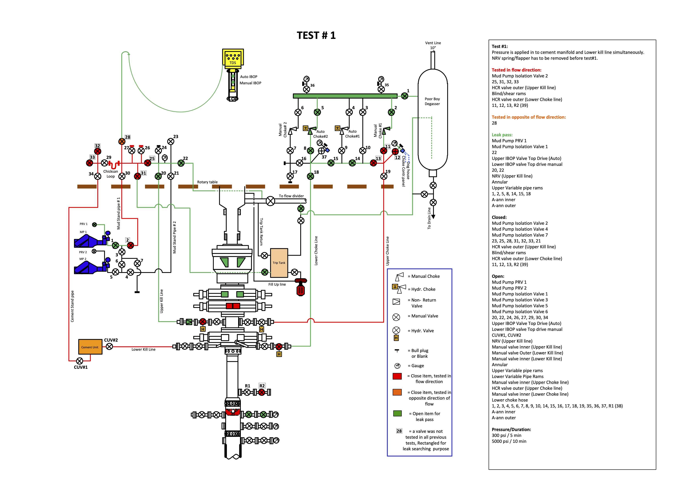
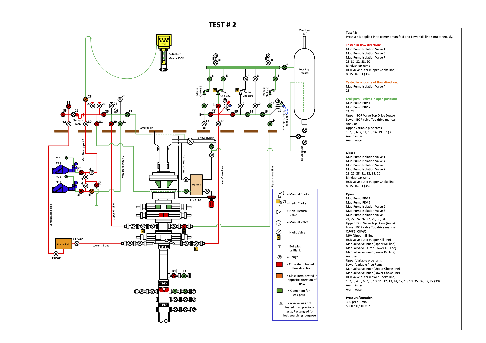
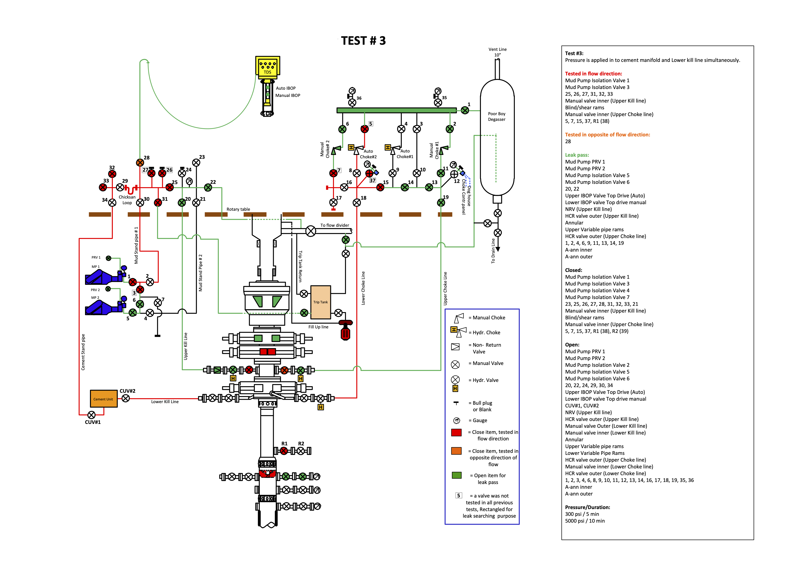
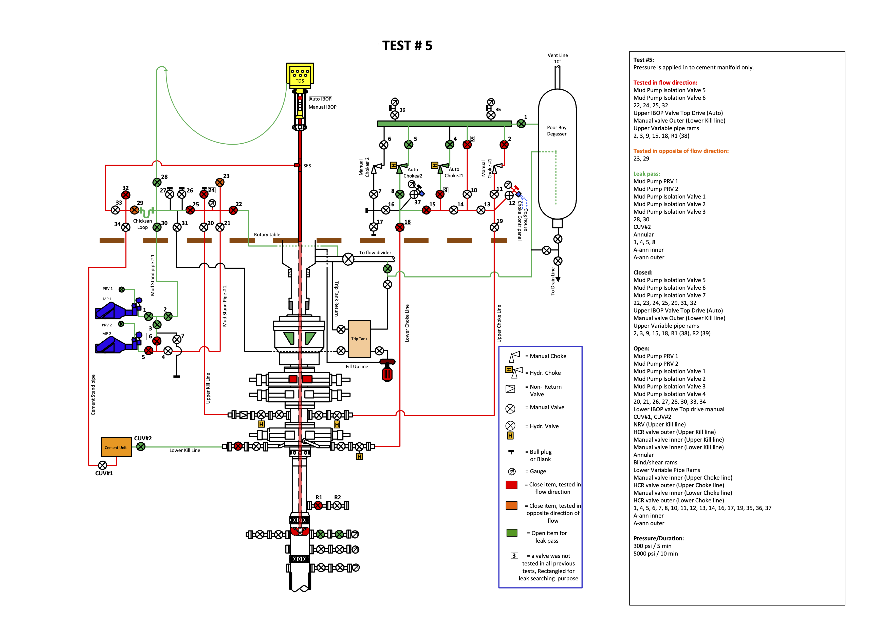
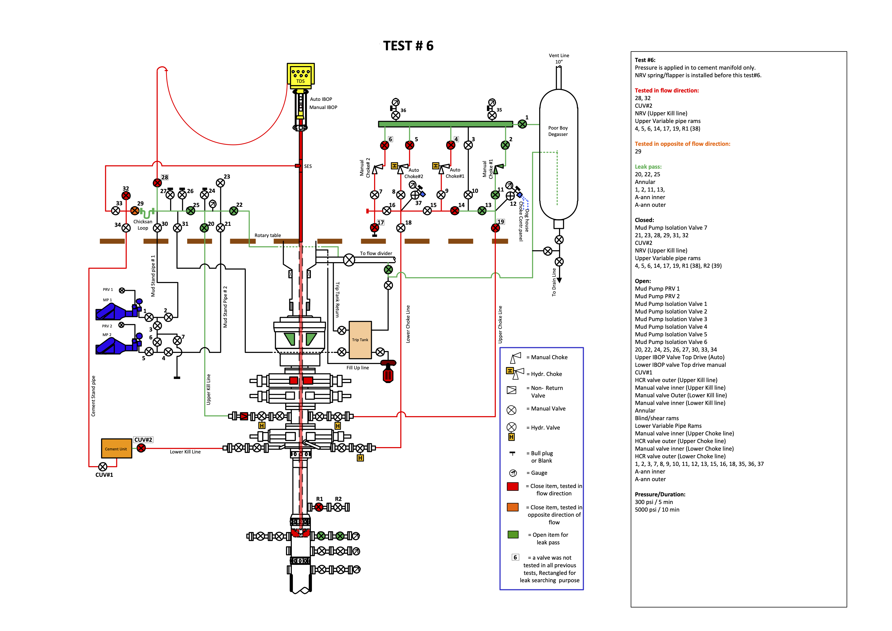
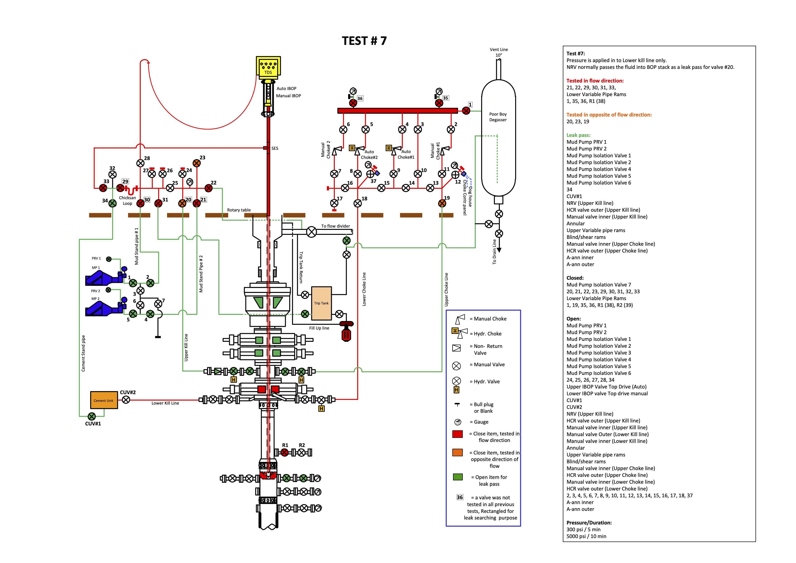
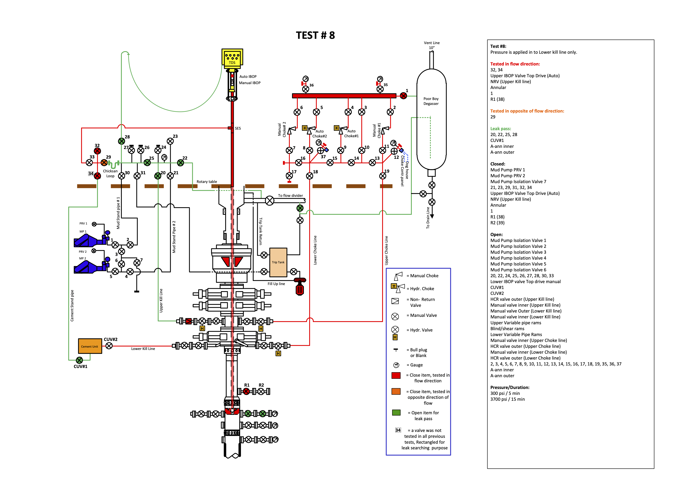
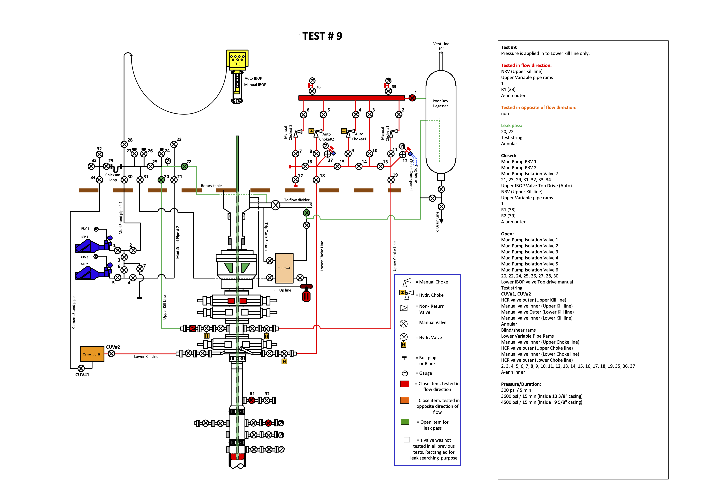
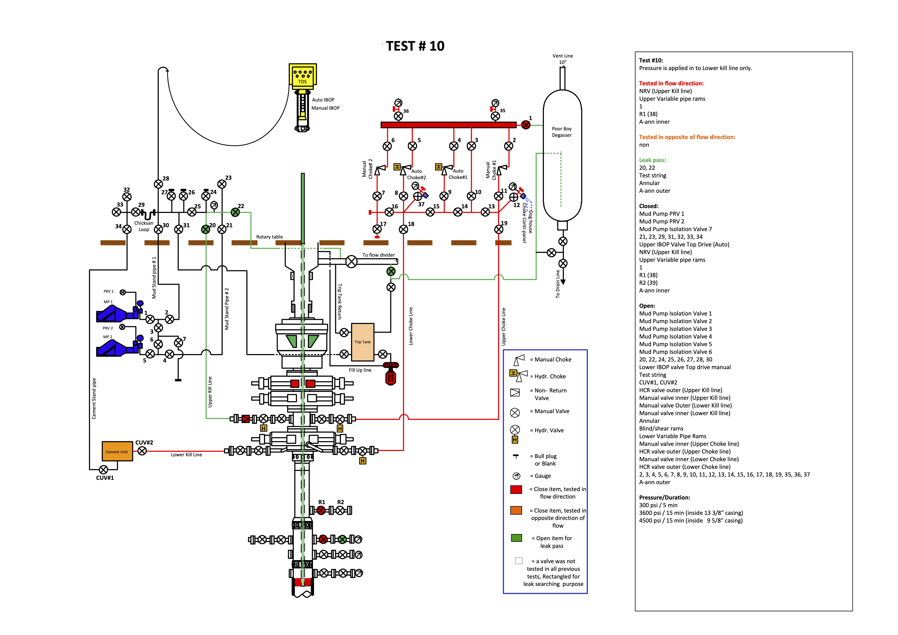

Test matrix
Test matrix is more than a table, it is an awesome analytical tool to develop smart/efficient BOP tests sequence.
The pressure control equipment test (BOP pressure test) is regular 2-3 weeks based operation, therefore advantages the test matrix allows to achieve as the best possible performance and safety improvement are crucial, to name some in detail:
- Assistance to see whole picture, an overview of all tests, what is tested, how many times;
- Assurance that all wet and non-wet envelop valves (of kill, choke, stand pipe manifold, BOP stack, mud pumps) are tested to correct pressure and correct flow direction – it is kind of Process Safety procedural barrier, a proof document;
- Possibility to reduce number of tests in sequence to as minimum as possible;
- Possibility of splitting the well control equipment to “kill side” and “choke side” allowing independent testing of stand pipe manifold / rig pump’s valves and choke valves;
- Balancing of valves quantity being tested in each individual test to have approximately even distribution in the whole sequence of tests;
- Reduction of valves' manipulation between tests and therefore a wear;
- Simplification of search for a valve leak;
- Possibility of splitting “off-line” and “on-line” tests.









